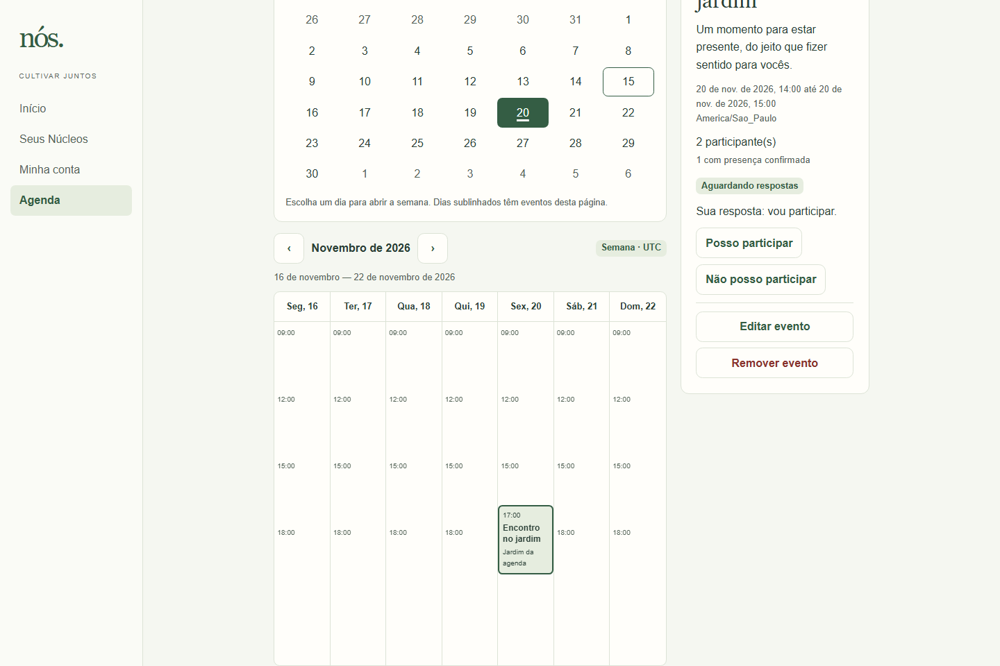
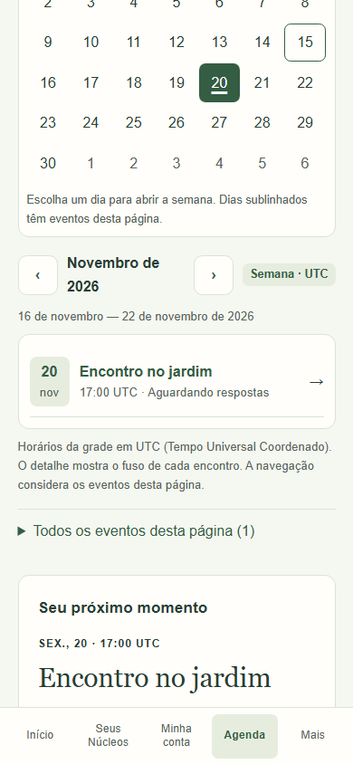
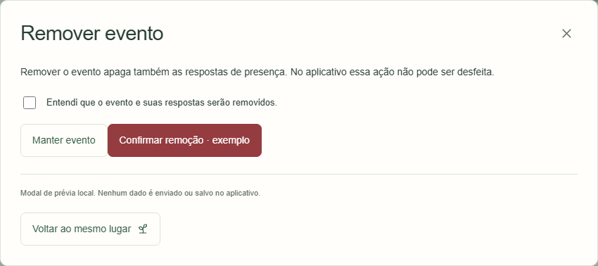
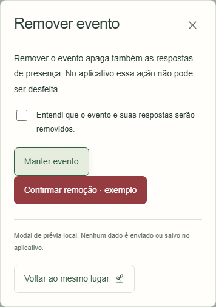
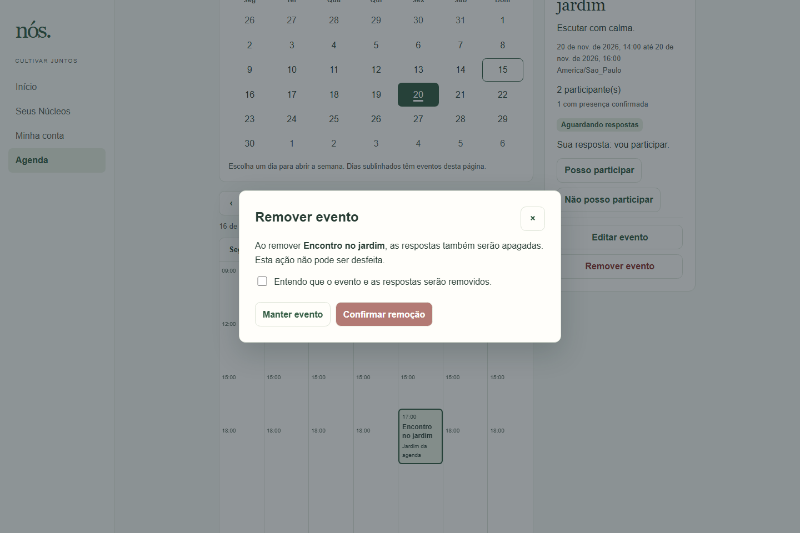
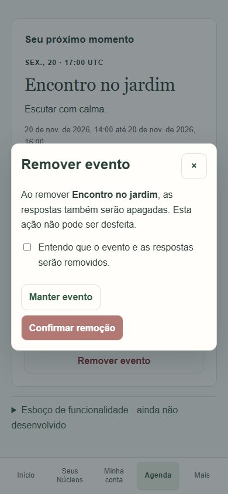

A09, 15/11/2026. Atlas vivo, antes e depois, e prévia Angular com Supabase local. Chromium em 1440 × 960 e 390 × 844 pixels; as imagens do Atlas recortam a composição. Abra as imagens para ler detalhes.
O Angular anterior não tinha a rota da Agenda. Para comparar a linha Next.js, veja as evidências históricas no computador e no celular. Os nomes e eventos desta galeria são fictícios.
O mês fica acima da semana, com marcação dos dias com eventos. A presença é respondida no detalhe. Adicionar abre para integrantes; editar e remover aparecem para quem pode gerenciar. Manter, X, Escape e gesto externo fecham os diálogos sem confirmar. O Atlas não persiste suas demonstrações.





